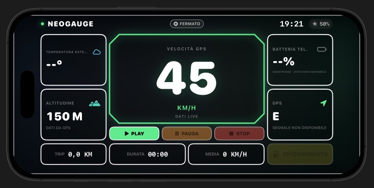
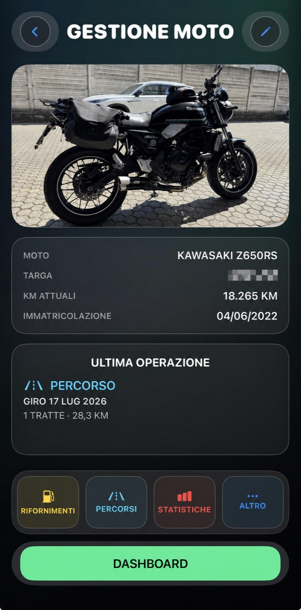
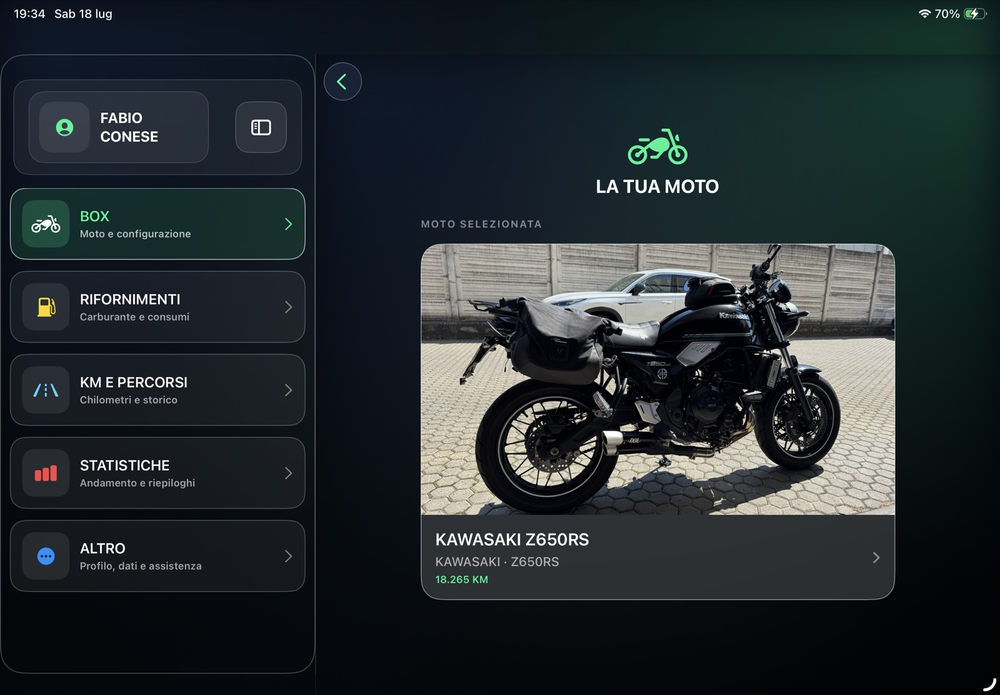

Rifornimenti
Ogni pieno diventa informazione.
Registra litri, prezzo e chilometri. NeoGauge organizza lo storico e rende immediati consumi e costi.
Una Dashboard digitale per la tua moto
NeoGauge nasce per affiancare le moto con tachimetro analogico o display LCD essenziale, portando sul tuo iPhone velocità, temperatura esterna, altitudine e informazioni di guida chiare e immediate.

Schermata reale della Dashboard NeoGauge su iPhone.
È da qui che nasce NeoGauge
Molte moto classiche e modern-retro — come la Kawasaki Z650RS da cui è partita l'idea — conservano il fascino del tachimetro a lancetta, ma affidano a un piccolo display LCD soltanto poche informazioni.
NeoGauge trasforma l'iPhone in una strumentazione digitale complementare: leggibile in orizzontale, sempre attiva mentre la usi e progettata per mostrare ciò che serve con un solo colpo d'occhio.
Non sostituisce la strumentazione originale e non è un navigatore.
Velocità GPSGrande, digitale e immediata.
Temperatura esternaCon le condizioni meteo disponibili.
Altitudine e direzioneDati e stato del segnale GPS.
Riepilogo della sessioneDistanza, durata e velocità media.
Angolo di piegaStima live opzionale su iPhone; storico e gestione inclusi.
Due interfacce, gli stessi dati
La stessa moto e le stesse informazioni, con un'esperienza adattata allo spazio disponibile su ciascun dispositivo.
Dati live durante l'uso, rifornimenti, statistiche e diario in un'interfaccia pensata per lo schermo dell'iPhone.
Scopri la versione iPhone →
Box, rifornimenti, chilometri e statistiche sfruttano una vista più ampia, mantenendo la stessa organizzazione dei dati.
Scopri la versione iPad →
Dalla Dashboard, tutto il resto
Dalla necessità di leggere meglio le informazioni durante l'uso sono nate le altre funzioni: rifornimenti, statistiche, riepiloghi e un piccolo diario personale. In NeoGauge 1.6 tutto è incluso, senza pubblicità.
L'ecosistema cresciuto intorno alla Dashboard
Rifornimenti
Registra litri, prezzo e chilometri. NeoGauge organizza lo storico e rende immediati consumi e costi.
Statistiche
Confronta chilometri, carburante, spese e medie con schede e grafici costruiti sui tuoi dati.
Diario
Aggiungi fotografie e note personali e crea una cartolina del giro pronta da condividere: tutte le funzioni attuali sono incluse.
Box
Dati identificativi, chilometraggio e attività recenti restano raccolti in una vista ordinata e personale.
Semplice e trasparente
NeoGauge 1.6 è completamente gratuita e senza pubblicità. Tutte le funzioni disponibili sono incluse per ogni utente.
Una scelta precisa
NeoGauge non è un navigatore e non nasce per pianificare itinerari. Non fornisce indicazioni stradali.
Può conservare i dati riepilogativi e le tracce GPS delle tue sessioni, insieme alle note e alle foto che scegli di aggiungere.
Nessuna navigazioneNiente indicazioni stradali o pianificazione.
Nessun social networkI tuoi giri restano nel tuo archivio privato.
Dati e tracce salvateNumeri utili e storico personale.
Diario personale inclusoRicordi, fotografie e note scelti da te.
I tuoi dati sono tuoi
NeoGauge conserva i dati localmente e, quando disponibile, li sincronizza tramite il database privato iCloud associato al tuo account Apple.
Leggi l'informativa sulla privacyIn breve
No. NeoGauge non fornisce indicazioni stradali né pianifica itinerari. Le tracce GPS salvate sono il registro personale dei tuoi giri.
Soltanto riepiloghi utili come chilometri, durata e velocità media o massima. Puoi poi raccoglierli in un ricordo con nome, note e fotografie.
Sì. NeoGauge condivide lo stesso modello di dati e offre un'interfaccia adattata ai due dispositivi.
Sì. NeoGauge 1.6 è completamente gratuita e senza pubblicità: tutte le funzioni attuali sono incluse.
Sono inclusi Dashboard, tracce GPS dei giri salvati, diario con fotografie e condivisione, posizioni GPS dei rifornimenti, dati di piega, statistiche e gestione fino a tre moto attive.
Il Box può contenere fino a tre moto attive. Archiviando una moto liberi un posto e conservi il suo storico. Scopri i dettagli.
NeoGauge è disponibile gratuitamente su App Store per iPhone e iPad. Apri la pagina ufficiale.
Parliamo di NeoGauge
Scrivimi direttamente. Ogni messaggio aiuta NeoGauge a crescere nella direzione giusta.
NeoGauge per iPhone e iPad